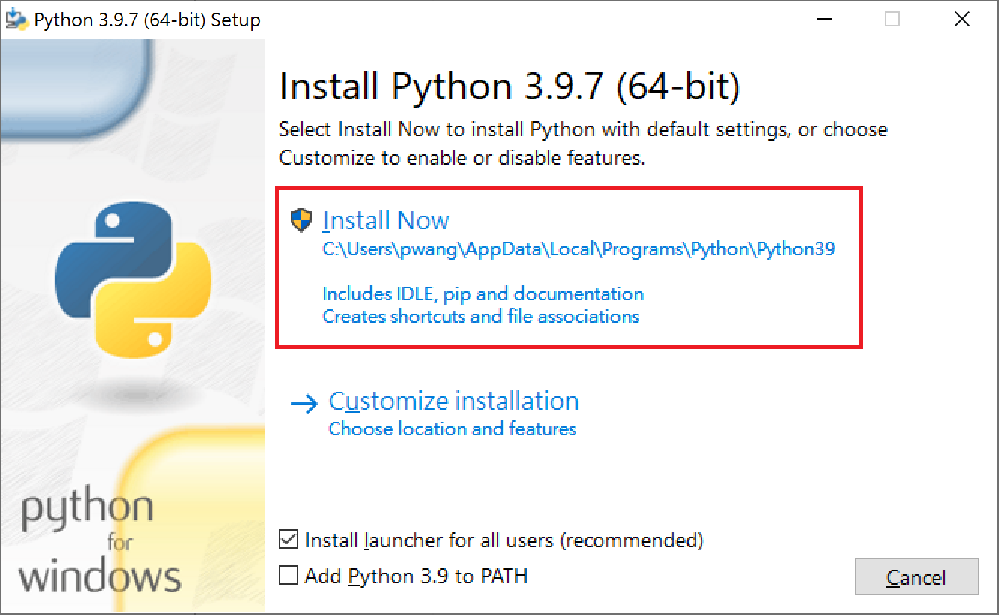
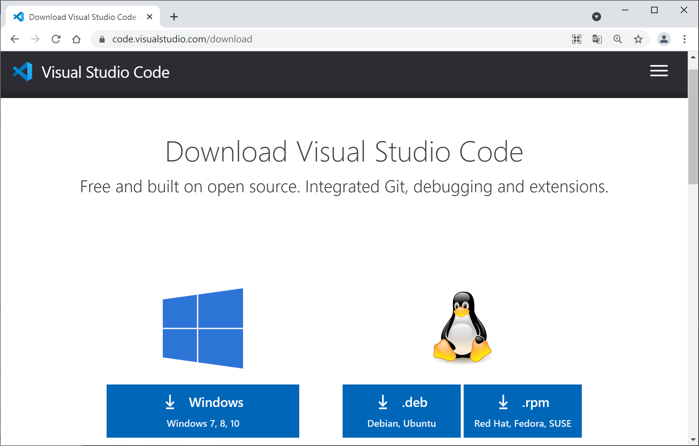
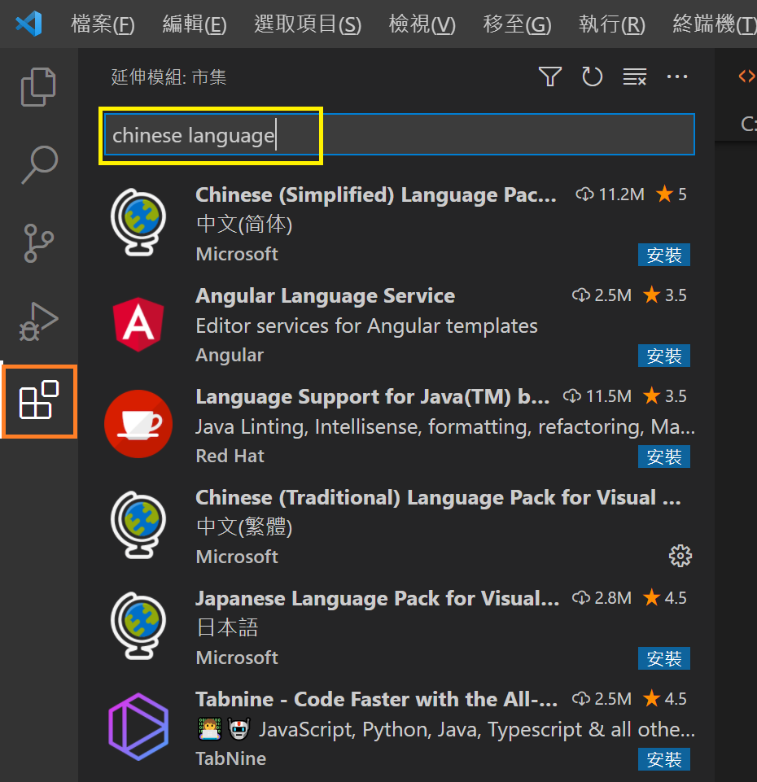
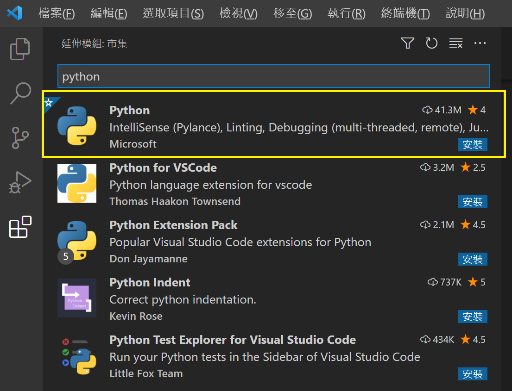
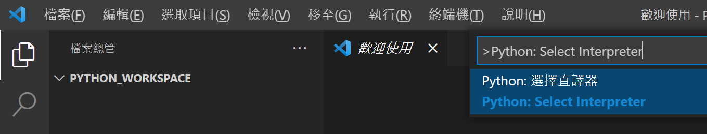
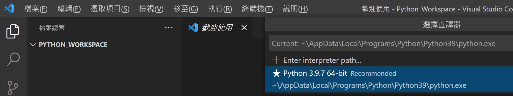
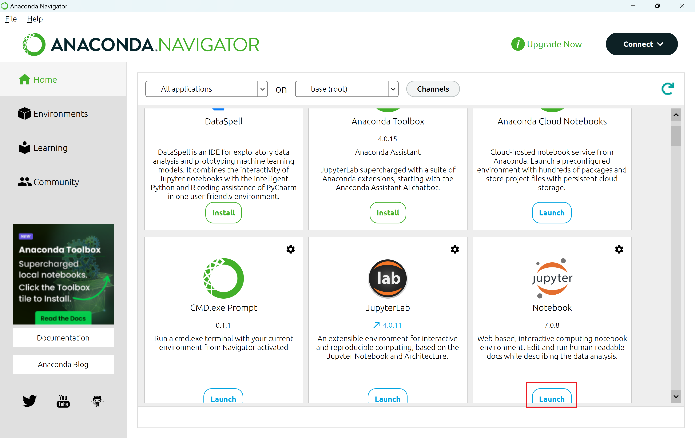
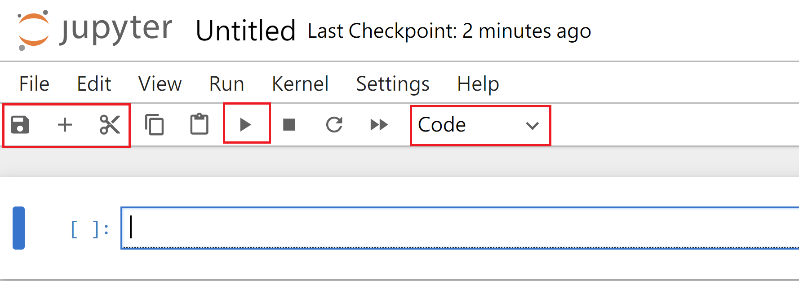

Recipe 1- 程式語言簡介與軟體安裝
本單元將說明 程式語言架構與Python簡介、軟體安裝、程式檔案建立與執行
程式語言架構與Python簡介
程式語言用於開發實作專案，不同的專案，開發者選則符合需求的程式語言來完成專案。大部分的程式語言具相同基本架構如變數、資料類型、運算子、條件、迴圈、函數、物件等，不同的是個別程式撰寫語法或提供的功能多寡而以，這裡所謂的語法是指程式語言撰寫的方式，就像日常語言中文有中文寫法，英文有英文的寫法等。所以學習程式語言應著重於解決思考能力的培養，因為大部分的程式撰寫方式是相同的，課程以Python為開始，除了容易撰寫的特性之外，Python也是後續課程(資料分析、大數據、物聯網與人工智慧應用等)與業界會用到的工具。
程式設計主要的兩個方法為結構化設計與物件導向設計，結構化分析是透過系統方法來理解和定義系統需求。它著重於將系統分解為更小的、可管理的組件並了解資料和程式流程。物件導向設計著重於現實世界的實體及其交互作用來進行系統建模，它著重於物件及其關係的設計。
軟體安裝
Python安裝包含 Python與整合開發環境(IDE-Integreated Development Environment)安裝，市面上有許多Python IDE(PyCharm、Atom、Spyder、VSCode等)，課程將使用微軟開源Visual Studio Code，軟體下載與安裝步驟如下：
1. 下載Python
下載最新版本Python 3.12.6，點選下載安裝程式，安裝過程請一直選下一步直到完成。

2. 驗證Python是否安裝成功
請點選鍵盤 視窗符號按鈕 與 X ，開啟命令提示字元視窗並輸入 py -3 --version，如果有顯示安裝Python版本，則表示安裝成功。
3. 下載程式編輯軟體
請下載Windows版Visual Studio，下載後請執行安裝如下圖。

4. 設定VS Code顯示語言
VS Code預設顯示語言為英文，如希望將顯示語言設定為中文，請點選左邊延伸模組並在搜尋方塊輸入chinese language後，選擇中文(繁體)並選install進行安裝，圖片顯示已安裝符號，安裝後軟體會要求重啟，重啟後選單命令會改為中文。

5. 安裝Python延伸模組
安裝VS Code Python延伸模組之前，請先確認Python已安裝成功，點選左邊延伸模組並在搜尋方塊輸入python後，選擇安裝Python延伸模組。

6. 設定Python直譯器
選擇 檢視-命令選擇區 後，在命令選擇區輸入 Python: Select Interpreter，選擇 Python:選擇直譯器 (如下第一張圖)，之後來選擇自己安裝Python版本(如第二張圖)，這個步驟設定當VS Code要執行Python程式時，設定安裝Python直譯程式的位置。


程式檔案建立與執行
1. 建立課程程式檔案目錄
請新增目錄用於放置課程所有Python程式，例如在桌面新增一目錄名稱為 python_workspace
2. 建立並測試程式
開啟VS Code，在選單選擇 檔案-開啟資料夾 並選擇桌面Python程式檔案位置資料夾(例python_workspace)，新增檔案並設定檔案名稱為 class1.py，請注意：Python程式檔副檔名為 py，將下列程式碼複製並貼於 class1.py後執行。
Anaconda
1. 下載Anaconda
Anaconda為Python套件管理程式，下載後執行安裝。
2. 執行Anaconda
開啟Windows應用程式中 Anaconda中的Anaconda Navigator後選擇Jupyter Notebook並點選Launch開啟Jupyter Notebook，Jupyter Notebook執行於瀏覽器並開啟Jupyter Notebook預設根目錄，Jupyter Notebook檔案(副檔名為ipynb)可包含程式碼(如Python)與文件說明文字。

3. 建立Jupyter檔案
請點選右邊New-Notebook來建立新的Notebook檔，點選後請在Select Kernel視窗選擇 Python3(ipykernel)後點選Select，選項清單右邊顯示Code代表現在區塊為程式區塊，使用者可將區塊變換為Markdown、Raw，Markdown為文字說明區塊。新增區塊請選擇 + ，刪除區塊請選擇✄，執行程式請選擇▶。請在程式區塊輸入下列命令後執行
